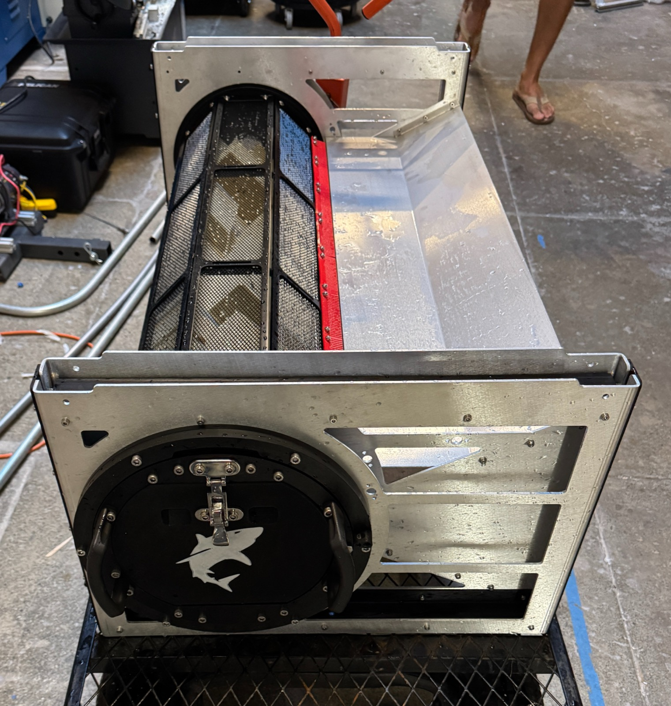
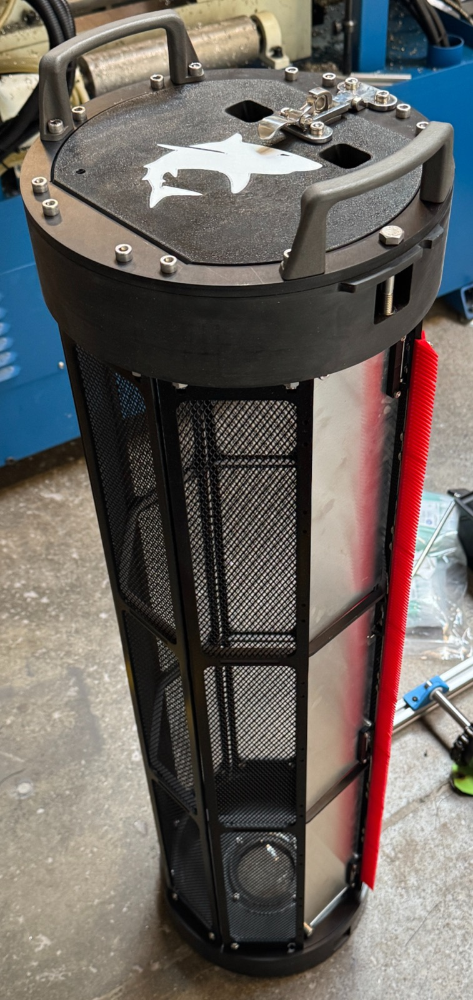
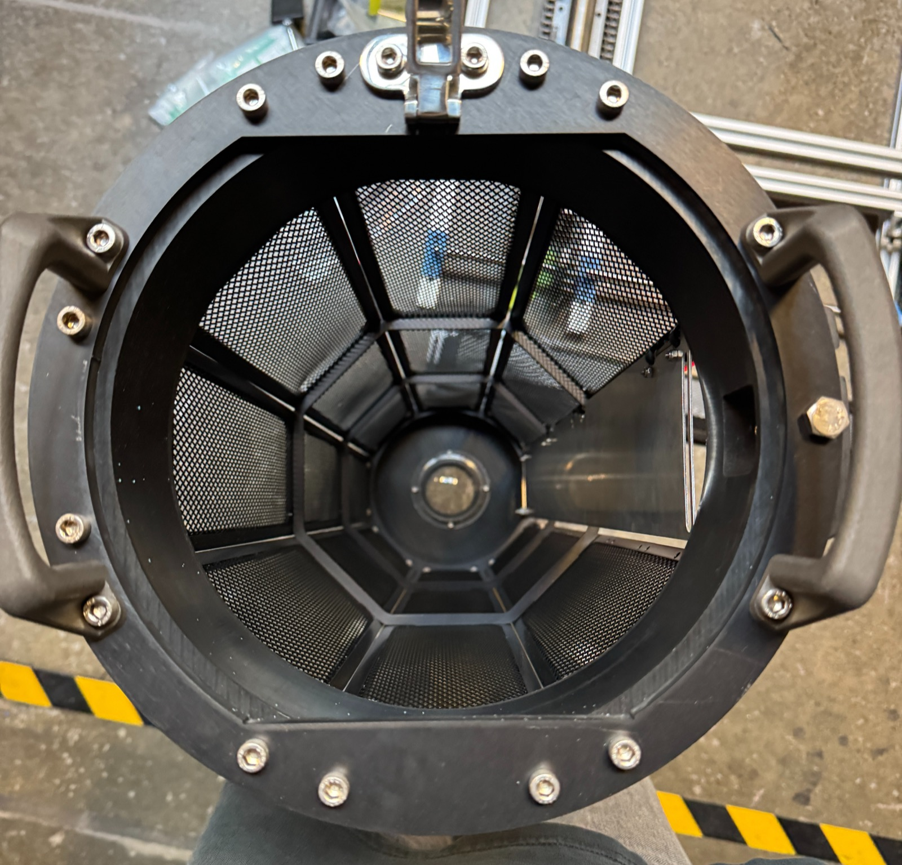
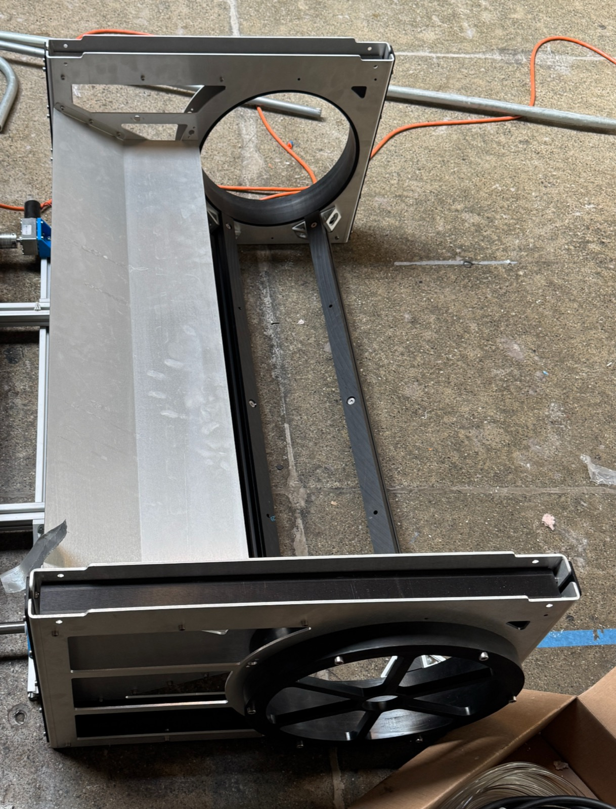
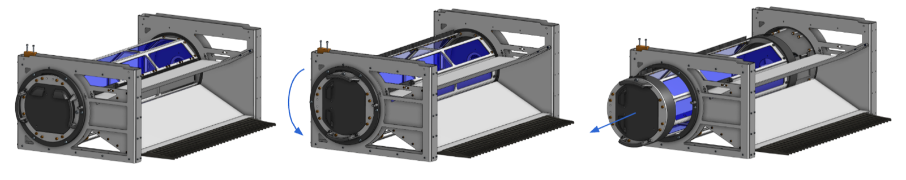

Ulysses — Sea Grass Harvester
2026
Ulysses Inc. is a San Francisco-based start-up developing various underwater robotic platforms -- namely, a 6-DoF autonomous underwater drone. During the summer of 2026, I worked as a Mechanical Engineering Intern and am now continuing my work with them part-time as I finish my studies.
One of my projects was to design and build a seagrass harvesting payload that sits on the belly of the drone to harvest seagrass fruits for seed processing and restoration.
The payload uses a passively moving, weighted, and spring-loaded door that opens with the flow of water as the drone swims over the seagrass at a set velocity between 0.5 - 4.0 m/s, allowing the entry of fruits into the collection cage. The opening velocity is adjustable. When the drone stops or moves in reverse, the door closes. The geometry minimizes drag as much as possible while still directing the flow to guide the fruits into the collection cage. The collection cage can hold up to 40 L of fruits at a time, and this limit is parameterized in the CAD.
This system was designed for ease of assembly, transportation, and manufacturing. It is built primarily from Delrin, anodized aluminum, and 316 stainless steel, with a few non-structural FDM and SLS printed parts. I CNC-machined the smaller components such as the door hinges and shafts on a 5-axis Haas CNC mill, with all CAM and machining done by me, while larger components were outsourced to external manufacturers.
This system will be used to collect seagrass fruits in the coming months.




